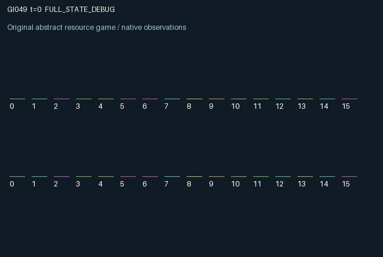

GI049 / LEGACY_ARRAY
astra-d2-00049 — Delayed demand disclosure and irreversible mutual assembly
2 agents5 actions16 observation columns32 original horizonRuntime: PASS
Release verification episode
Untrained uniform legal actions. Actual JAX state sampled along the full original episode; full-state debug camera. No human performance or learning claim.

Run this game
crucibles play --game 49
Start Python locally, then open the address printed by the terminal. Installation, multiplayer, takeover and keyboard controls →
Objective, rewards & ending
Exact task contract
{
"objective": "Accumulate original per-agent rewards under the interaction rules in mechanism.md.",
"natural_termination": "No early terminal; original t >= 32 horizon.",
"exact_transition_and_reward_source": "def raw_step(self, key, state, actions):\n fresh_target = jax.random.randint(key, (2,), 0, 2, dtype=jnp.int32)\n write = (~state[\"locked\"]) & ((actions == 1) | (actions == 2))\n stage = jnp.where(write, actions - 1, state[\"stage\"]).astype(jnp.int32)\n new_lock = (actions == 4) & (stage >= 0) & (~state[\"locked\"])\n locked = state[\"locked\"] | new_lock\n piece_age = jnp.where(\n stage >= 0,\n jnp.where(write, 0, jnp.minimum(32, state[\"piece_age\"] + 1)),\n 0,\n ).astype(jnp.int32)\n delivered = state[\"pending\"] >= 0\n public = jnp.where(delivered, state[\"pending\"], state[\"public\"])\n message_age = jnp.where(\n public >= 0,\n jnp.where(delivered, 0, jnp.minimum(32, state[\"message_age\"] + 1)),\n 0,\n ).astype(jnp.int32)\n pending = jnp.where(actions == 3, state[\"target\"], -1).astype(jnp.int32)\n completed = jnp.all(locked)\n correct = jnp.roll(stage, 1) == state[\"target\"]\n partner_quality = jnp.maximum(0.25, 1.0 - 0.05 * jnp.roll(piece_age, 1))\n successful = jnp.all(correct)\n payout = (\n jnp.where(correct, 0.85, -0.55) * partner_quality\n + 0.1 * successful.astype(jnp.float32)\n )\n rewards = jnp.clip(\n completed.astype(jnp.float32) * payout\n - 0.025 * write.astype(jnp.float32)\n - 0.01 * (actions == 3).astype(jnp.float32)\n - 0.01 * new_lock.astype(jnp.float32),\n -1.0, 1.0,\n ).astype(jnp.float32)\n next_state = {\n \"t\": state[\"t\"] + jnp.array(1, dtype=jnp.int32),\n \"target\": jnp.where(completed, fresh_target, state[\"target\"]).astype(jnp.int32),\n \"stage\": jnp.where(completed, -1, stage).astype(jnp.int32),\n \"locked\": jnp.where(completed, jnp.zeros((2,), dtype=jnp.bool_), locked),\n \"public\": jnp.where(completed, -1, public).astype(jnp.int32),\n \"pending\": jnp.where(completed, -1, pending).astype(jnp.int32),\n \"piece_age\": jnp.where(completed, 0, piece_age).astype(jnp.int32),\n \"message_age\": jnp.where(completed, 0, message_age).astype(jnp.int32),\n \"rounds\": state[\"rounds\"] + completed.astype(jnp.int32),\n \"last_result\": jnp.where(\n completed, jnp.where(correct, 1.0, -1.0), state[\"last_result\"]\n ).astype(jnp.float32),\n \"last_success\": jnp.where(\n completed, successful.astype(jnp.float32), state[\"last_success\"]\n ).astype(jnp.float32),\n }\n done_all = next_state[\"t\"] >= 32\n dones = jnp.full((2,), done_all, dtype=jnp.bool_)\n info = {\"done_all\": done_all, \"legal_mask\": self.legal_actions(next_state)}\n return self.observe(next_state), next_state, rewards, dones, info"
}Declared per-step reward bounds: -1.0 to 1.0. Observability: source_defined.
Rules
Original mechanism document (historical status wording retained)
# astra-d2-00049 — Delayed demand disclosure and irreversible mutual assembly This parentless proposal combines a generic communication task with asynchronous commitment and perishable components. Its relationship to cooperative bit communication and complementary production is explicit. It is not asserted to be structurally unique, copied from a particular game, validated, eligible or learnable. Each agent privately observes a binary requirement for the component that the other agent must supply. Actions are 0 wait, 1 stage a zero component, 2 stage a one component, 3 send one's actual private requirement, and 4 lock one's staged component. An unlocked component can be replaced. A locked component cannot be changed until the other agent also locks, when the two-part assembly is settled and both component slots clear. Locking an empty slot is a legal no-op. The episode clock continues across assemblies and terminates at 32 steps. A send action creates a pending truthful message; it is delivered during the following transition. The public archive retains the delivered requirement until assembly settlement. The sender observes its pending-message indicator; the recipient sees the value only after delivery. Both staged values, locks and component ages are public. Each agent sees only its own current private requirement. A completed assembly samples independent fresh private requirements with the supplied step key and clears every old message, including pending ones, so old requirements cannot be used for the next assembly. Observations 0..15 are time, own requirement, own/other staged values, own/other locks, own/other archived message values, own pending-message indicator, own/other component ages, own/other archive ages, completed-assembly count, own previous satisfaction result and previous joint-success indicator. A missing component or message is encoded as zero; binary values are encoded as one half and one. Settlement pays each agent for whether the partner's component meets its requirement, with value multiplied by that component's age-dependent quality. Quality decreases to a floor of one quarter. Correct receipt pays 0.85 times quality; incorrect receipt pays -0.55 times quality. Joint correctness adds 0.1 to each agent. Writing, sending and newly locking cost 0.025, 0.01 and 0.01 respectively. The result is clipped to [-1,1]. Waiting can reduce either positive or negative settlement magnitude, which is a deliberate consequence of treating deterioration as reduced consequential value rather than an extra penalty. The two decisions are causally coupled through each agent's contribution to the other's reward and through the requirement that both locks persist before settlement. Early locking can trap a wrong component; waiting permits disclosure but lowers component quality. Cooperation may require truthful messages and making a component valuable to the partner even though most direct payoff is determined by the partner's contribution. No claimed learning or performance result accompanies this source.
Commands
0Wait
1Stage assembly 0
2Stage assembly 1
3Disclose demand
4Lock irreversible stage
Roles & abilities
agent_0 Original legacy agent; see mechanism and source
agent_1 Original legacy agent; see mechanism and source
Observation permissions
Training receives only the original observation rows. Role cameras use declared visibility; debug cameras are explicitly marked. Local benchmark records log debug exposure and role takeover history.
Exact observation layout
[
{
"slice": [
0,
16
],
"visibility": "exact original observe() below",
"source_code": "def observe(self, state):\n observations = jnp.zeros((2, 16), dtype=jnp.float32)\n observations = observations.at[:, 0].set(state[\"t\"] / 32.0)\n observations = observations.at[:, 1].set(state[\"target\"])\n observations = observations.at[:, 2].set((state[\"stage\"] + 1) / 2.0)\n observations = observations.at[:, 3].set((jnp.roll(state[\"stage\"], 1) + 1) / 2.0)\n observations = observations.at[:, 4].set(state[\"locked\"])\n observations = observations.at[:, 5].set(jnp.roll(state[\"locked\"], 1))\n observations = observations.at[:, 6].set((state[\"public\"] + 1) / 2.0)\n observations = observations.at[:, 7].set((jnp.roll(state[\"public\"], 1) + 1) / 2.0)\n observations = observations.at[:, 8].set(state[\"pending\"] >= 0)\n observations = observations.at[:, 9].set(state[\"piece_age\"] / 32.0)\n observations = observations.at[:, 10].set(jnp.roll(state[\"piece_age\"], 1) / 32.0)\n observations = observations.at[:, 11].set(state[\"message_age\"] / 32.0)\n observations = observations.at[:, 12].set(jnp.roll(state[\"message_age\"], 1) / 32.0)\n observations = observations.at[:, 13].set(state[\"rounds\"] / 16.0)\n observations = observations.at[:, 14].set(state[\"last_result\"])\n observations = observations.at[:, 15].set(state[\"last_success\"])\n return observations"
}
]Entity visibility & attributes
[]
Actual verification & provenance
Per-game execution receipt
{
"game": "gi049",
"status": "PASS",
"verification_revision": 2,
"source_sha256": "aaef75840d404768ccd27500daa65b513773e1a6bab05182757a28d2b1fb514c",
"seed": 20261101,
"runtime": {
"jax": "0.4.38",
"numpy": "1.26.4",
"devices": [
"TFRT_CPU_0"
]
},
"dimensions": {
"num_agents": 2,
"observation_size": 16,
"num_actions": 5,
"max_steps": 32
},
"checks": {
"eager_reset": {
"status": "PASS",
"seconds": 0.511195182800293
},
"observation_spaces_legal_masks": {
"status": "PASS",
"seconds": 0.11626839637756348
},
"eager_step": {
"status": "PASS",
"seconds": 0.6561501026153564
},
"jit_reset": {
"status": "PASS",
"seconds": 0.24682378768920898
},
"jit_step": {
"status": "PASS",
"seconds": 0.453826904296875
},
"eager_jit_integer_parity_float_measurement": {
"status": "PASS",
"seconds": 0.0018491744995117188
},
"jit_vmap_reset": {
"status": "PASS",
"seconds": 0.3456876277923584
},
"jit_vmap_step": {
"status": "PASS",
"seconds": 0.38936495780944824
},
"outer_autoreset_api": {
"status": "PASS",
"seconds": 0.7020754814147949
},
"full_original_horizon_episode_and_render": {
"status": "PASS",
"seconds": 2.007560968399048
}
},
"human_scores": null,
"browser_controls": "PENDING",
"failures": [],
"elapsed_seconds": 5.853362321853638,
"float_parity_max_abs": 0.0,
"numerical_parity": "EXACT",
"raw_terminal_absorbing": "NOT_PART_OF_ORIGINAL_LEGACY_CONTRACT",
"terminal_outer_reset": "PASS",
"episode_steps": 32,
"scripted_random_returns": [
1.64000004529953,
-0.3499999921768904
],
"terminal": true,
"demo_information": "FULL_STATE_DEBUG",
"demo_frames": 33,
"render_roles_checked": 2
}Chromium control verification
{
"game": "gi049",
"status": "PASS",
"human_scores": null,
"engineering": true,
"checks": [
"catalog_selected_and_real_native_reset",
"dom_queue_and_native_step",
"second_participant_ownership_and_native_joint_step",
"all_roles_individually_controllable_no_role_cap",
"explicit_debug_camera",
"release_to_pure_ai_without_reset"
],
"ui_sha256": "15b5861d23b3c42811865c954d5a988280bbfd21cf8e93754be2437a027158c5",
"seconds": 3.893206834793091
}Original identity and file hashes
{
"id": 49,
"key": "gi049",
"title": "astra-d2-00049 — Delayed demand disclosure and irreversible mutual assembly",
"summary": "",
"tags": [],
"family": "legacy_array",
"dimensions": {
"num_agents": 2,
"observation_size": 16,
"num_actions": 5,
"max_steps": 32
},
"source_sha256": "aaef75840d404768ccd27500daa65b513773e1a6bab05182757a28d2b1fb514c",
"manifest_sha256": "dbc892a608adc5bcbe4ca93a57eed8276e130058f28774e368622bcb841b4332",
"files": [
{
"file": "candidate.py",
"sha256": "aaef75840d404768ccd27500daa65b513773e1a6bab05182757a28d2b1fb514c",
"bytes": 5234,
"origin": "work/exp_2/astra_generation/discovery_v2/initial/candidate_00049/attempt_00/candidate.py"
},
{
"file": "mechanism.md",
"sha256": "7afaf55462b41533edf8528ee2dd3cb5f5917b1d5163207e702668b9d17cf2fc",
"bytes": 3071,
"origin": "work/exp_2/astra_generation/discovery_v2/initial/candidate_00049/attempt_00/mechanism.md"
}
],
"original_status": "LEGACY_SOURCE",
"original_saved_replay": false,
"release_validation": "PASS",
"human_scores": null,
"browser_validation": "PASS"
}